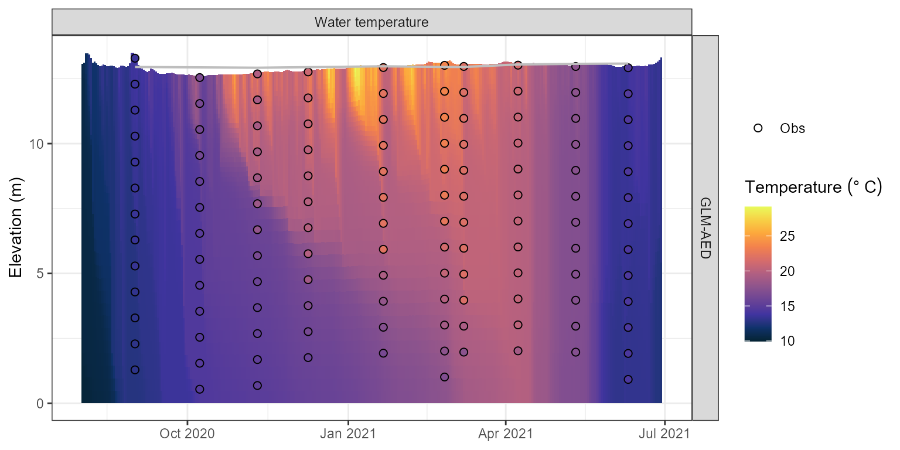
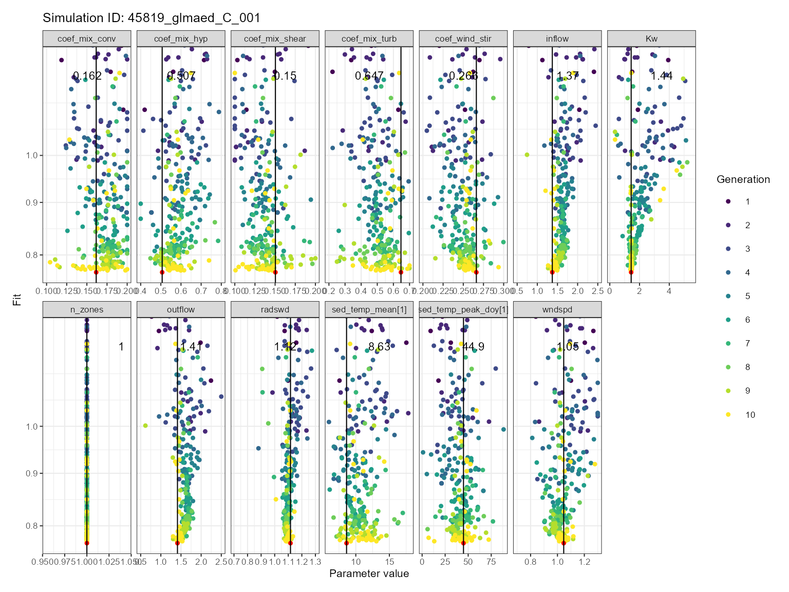
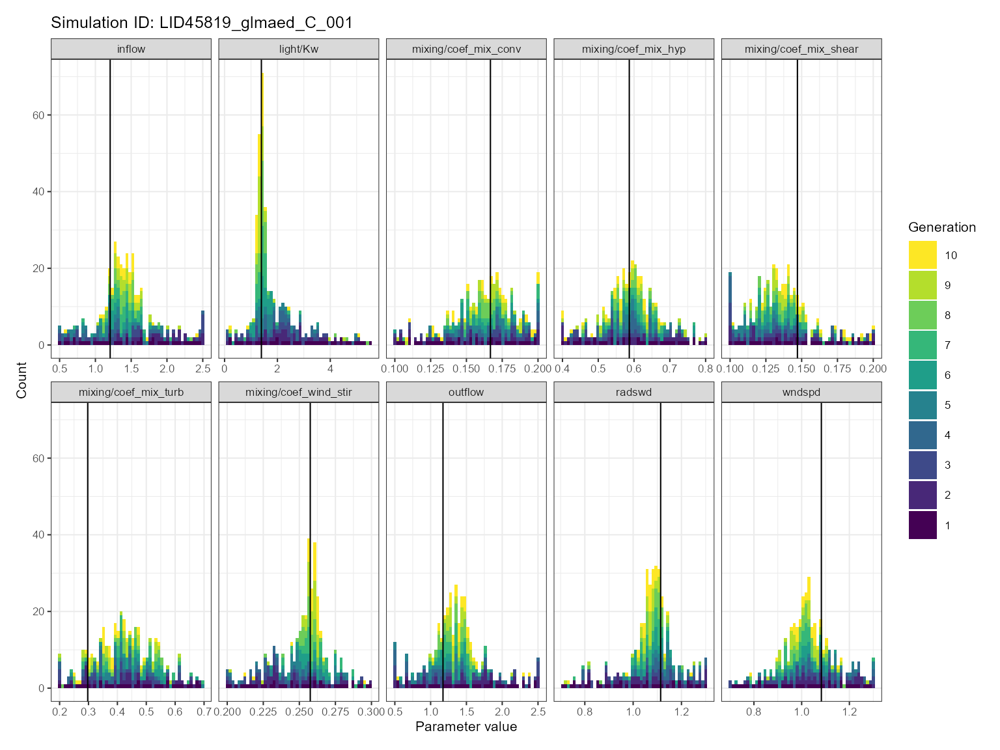
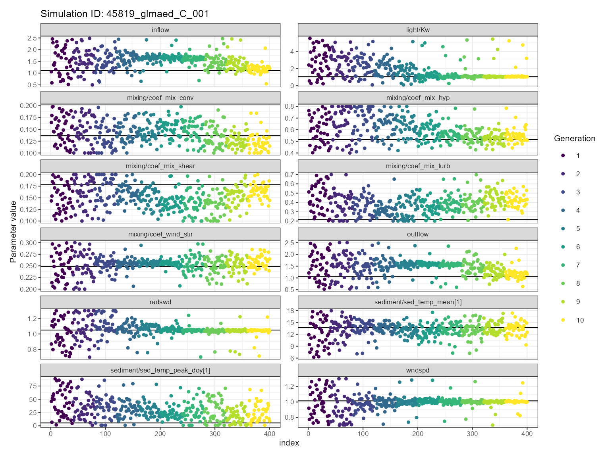

Setup
First, we will load the AEME and aemetools
package:
Create a folder for running the example calibration setup.
# tmpdir <- "calib-test"
# dir.create(tmpdir, showWarnings = FALSE)
tmpdir <- tempdir()
aeme_dir <- system.file("extdata/lake/", package = "AEME")
# Copy files from package into tempdir
file.copy(aeme_dir, tmpdir, recursive = TRUE)
#> [1] TRUE
path <- file.path(tmpdir, "lake")
list.files(path, recursive = TRUE)
#> [1] "aeme.yaml" "data/hypsograph.csv" "data/inflow_FWMT.csv"
#> [4] "data/lake_obs.csv" "data/meteo.csv" "data/outflow.csv"
#> [7] "data/water_level.csv" "model_controls.csv"Build AEME ensemble
Using the AEME functions, we will build the AEME model
setup. For this example, we will use the glm_aed model. The
build_aeme function will build the model setup and the
run_aeme function will run the model. The model output is
stored in the lake folder.
Note that AEME funtions can be used in pipelines to
allow for more efficient code. For example, the build_aeme
function can be used in a pipeline with the run_aeme
function to build and run the model in one step.
aeme <- yaml_to_aeme(path = path, "aeme.yaml")
model_controls <- AEME::get_model_controls()
model <- c("glm_aed")
aeme <- build_aeme(path = path, aeme = aeme, model = model,
model_controls = model_controls, ext_elev = 5,
use_bgc = FALSE) |>
run_aeme()
plot(aeme)
Water temperature contour plotfor the model output.
Load parameters to be used for the calibration
Parameters are loaded from the aemetools package within
the aeme_parameters dataframe. The parameters are stored in
a data frame with the following columns:
model: The model namefile: The file name of the model parameter file. For meteorological scaling variables, “met” is used, whereas for scaling factors for inflow and outflow, “inflow” an “outflow” is used accordingly.name: The parameter namevalue: The parameter valuemin: The minimum value of the parametermax: The maximum value of the parametermodule: The module of the parametergroup: The group of the parameter. Only used for phytoplankton and zooplankton parameters.
Parameters to be used for the calibration.
utils::data("aeme_parameters", package = "AEME")
aeme_parameters|>
DT::datatable(options = list(pageLength = 4, scrollX = TRUE))This dataframe can be modified to change the parameter values. For
example, we can change the light/Kw parameter for the
glm_aed model to 0.1:
aeme_parameters[aeme_parameters$model == "glm_aed" &
aeme_parameters$name == "light/Kw", "value"] <- 0.1
aeme_parameters| model | file | name | value | min | max | group | index | module | var_sim |
|---|---|---|---|---|---|---|---|---|---|
| glm_aed | glm3.nml | light/Kw | 1.0e-01 | 0.100 | 5.52e+00 | NA | NA | hydrodynamic | HYD_temp|HYD_thmcln |
| glm_aed | met | MET_wndspd | 1.0e+00 | 0.700 | 1.30e+00 | NA | NA | hydrodynamic | HYD_temp|HYD_thmcln |
| glm_aed | met | MET_radswd | 1.0e+00 | 0.700 | 1.30e+00 | NA | NA | hydrodynamic | HYD_temp |
| glm_aed | glm3.nml | mixing/coef_mix_conv | 1.4e-01 | 0.100 | 2.00e-01 | NA | NA | hydrodynamic | HYD_thmcln |
| glm_aed | glm3.nml | mixing/coef_wind_stir | 2.1e-01 | 0.200 | 3.00e-01 | NA | NA | hydrodynamic | HYD_thmcln |
| glm_aed | glm3.nml | mixing/coef_mix_shear | 1.4e-01 | 0.100 | 2.00e-01 | NA | NA | hydrodynamic | HYD_thmcln |
| glm_aed | glm3.nml | mixing/coef_mix_turb | 5.6e-01 | 0.200 | 7.00e-01 | NA | NA | hydrodynamic | HYD_thmcln |
| glm_aed | glm3.nml | mixing/coef_mix_hyp | 7.4e-01 | 0.400 | 8.00e-01 | NA | NA | hydrodynamic | HYD_thmcln |
| glm_aed | wdr | outflow | 1.0e+00 | 0.500 | 2.50e+00 | NA | NA | hydrodynamic | LKE_lvlwtr |
| glm_aed | inf | inflow | 1.0e+00 | 0.500 | 2.50e+00 | NA | NA | hydrodynamic | LKE_lvlwtr |
| gotm_wet | gotm.yaml | turbulence/turb_param/k_min | 6.0e-07 | 0.000 | 1.00e-05 | NA | NA | hydrodynamic | HYD_thmcln |
| gotm_wet | gotm.yaml | light_extinction/A/constant_value | 5.5e-01 | 0.395 | 6.59e-01 | NA | NA | hydrodynamic | HYD_temp|HYD_thmcln |
| gotm_wet | gotm.yaml | light_extinction/g1/constant_value | 5.9e-01 | 0.440 | 7.40e-01 | NA | NA | hydrodynamic | HYD_temp|HYD_thmcln |
| gotm_wet | gotm.yaml | light_extinction/g2/constant_value | 2.0e-01 | 0.050 | 2.70e+00 | NA | NA | hydrodynamic | HYD_temp|HYD_thmcln |
| gotm_wet | met | MET_wndspd | 1.0e+00 | 0.700 | 1.30e+00 | NA | NA | hydrodynamic | HYD_temp|HYD_thmcln |
| gotm_wet | met | MET_radswd | 1.0e+00 | 0.700 | 1.30e+00 | NA | NA | hydrodynamic | HYD_temp |
| gotm_wet | wdr | outflow | 1.0e+00 | 0.500 | 2.50e+00 | NA | NA | hydrodynamic | LKE_lvlwtr |
| gotm_wet | inf | inflow | 1.0e+00 | 0.500 | 2.50e+00 | NA | NA | hydrodynamic | LKE_lvlwtr |
| dy_cd | cfg | light_extinction_coefficient/7 | 9.0e-01 | 0.100 | 1.40e+00 | NA | NA | hydrodynamic | HYD_temp|HYD_thmcln |
| dy_cd | dyresm3p1.par | vert_mix_coeff/15 | 2.0e+02 | 50.000 | 7.50e+02 | NA | NA | hydrodynamic | HYD_thmcln |
| dy_cd | met | MET_wndspd | 1.0e+00 | 0.700 | 1.30e+00 | NA | NA | hydrodynamic | HYD_temp|HYD_thmcln |
| dy_cd | met | MET_radswd | 1.0e+00 | 0.700 | 1.30e+00 | NA | NA | hydrodynamic | HYD_temp |
| dy_cd | wdr | outflow | 1.0e+00 | 0.500 | 2.50e+00 | NA | NA | hydrodynamic | LKE_lvlwtr |
| dy_cd | inf | inflow | 1.0e+00 | 0.500 | 2.50e+00 | NA | NA | hydrodynamic | LKE_lvlwtr |
This dataframe can be passed to the run_aeme_param
function to run AEME with the parameter values specified in the
dataframe. This function is different to the run_aeme
function in that it does not return an aeme object, but the
model output is generated within the lake folder.
run_aeme_param(aeme = aeme, param = aeme_parameters,
model = model, path = path)
#> ℹ Deleted previous output for model GLM-AED at
#> C:/Users/runneradmin/AppData/Local/Temp/RtmpwtgxcD/lake/LID45819_wainamu/glm_aed/output/output.nc
#> ℹ Running models... (Have you tried parallelizing?) [2026-06-16 23:59:47]
#> → GLM-AED running... [2026-06-16 23:59:47]
#> ! GLM-AED run FAILED! [2026-06-16 23:59:47]
#> glm built using gcc version 12.2.0
#>
#> nDays= 200; timestep= 3600.000000 (s)
#> Maximum lake depth is 18.070000
#> Depth where flow will occur over the crest is 18.070000
#>
#> Wall clock start time : Tue Jun 16 23:59:47 2026
#>
#> Simulation begins...
#> Running day 2459061, 0.30% of days complete Running day 2459062, 0.60% of days complete Running day 2459063, 0.89% of days complete Running day 2459064, 1.19% of days complete Running day 2459065, 1.49% of days complete Running day 2459066, 1.79% of days complete Running day 2459067, 2.08% of days complete Running day 2459068, 2.38% of days complete Running day 2459069, 2.68% of days complete Running day 2459070, 2.98% of days complete Running day 2459071, 3.27% of days complete Running day 2459072, 3.57% of days complete Running day 2459073, 3.87% of days complete Running day 2459074, 4.17% of days complete Running day 2459075, 4.46% of days complete Running day 2459076, 4.76% of days complete Running day 2459077, 5.06% of days complete Running day 2459078, 5.36% of days complete Running day 2459079, 5.65% of days complete Running day 2459080, 5.95% of days complete Running day 2459081, 6.25% of days complete Running day 2459082, 6.55% of days complete Running day 2459083, 6.85% of days complete Running day 2459084, 7.14% of days complete Running day 2459085, 7.44% of days complete Running day 2459086, 7.74% of days complete Running day 2459087, 8.04% of days complete Running day 2459088, 8.33% of days complete Running day 2459089, 8.63% of days complete Running day 2459090, 8.93% of days complete Running day 2459091, 9.23% of days complete Running day 2459092, 9.52% of days complete Running day 2459093, 9.82% of days complete Running day 2459094, 10.12% of days complete Running day 2459095, 10.42% of days complete Running day 2459096, 10.71% of days complete Running day 2459097, 11.01% of days complete Running day 2459098, 11.31% of days complete Running day 2459099, 11.61% of days complete Running day 2459100, 11.90% of days complete Running day 2459101, 12.20% of days complete Running day 2459102, 12.50% of days complete Running day 2459103, 12.80% of days complete Running day 2459104, 13.10% of days complete Running day 2459105, 13.39% of days complete Running day 2459106, 13.69% of days complete Running day 2459107, 13.99% of days complete Running day 2459108, 14.29% of days complete Running day 2459109, 14.58% of days complete Running day 2459110, 14.88% of days complete Running day 2459111, 15.18% of days complete Running day 2459112, 15.48% of days complete Running day 2459113, 15.77% of days complete Running day 2459114, 16.07% of days complete Running day 2459115, 16.37% of days complete Running day 2459116, 16.67% of days complete Running day 2459117, 16.96% of days complete Running day 2459118, 17.26% of days complete Running day 2459119, 17.56% of days complete Running day 2459120, 17.86% of days complete Running day 2459121, 18.15% of days complete Running day 2459122, 18.45% of days complete Running day 2459123, 18.75% of days complete Running day 2459124, 19.05% of days complete Running day 2459125, 19.35% of days complete Running day 2459126, 19.64% of days complete Running day 2459127, 19.94% of days complete Running day 2459128, 20.24% of days complete Running day 2459129, 20.54% of days complete Running day 2459130, 20.83% of days complete Running day 2459131, 21.13% of days complete Running day 2459132, 21.43% of days complete Running day 2459133, 21.73% of days complete Running day 2459134, 22.02% of days complete Running day 2459135, 22.32% of days complete Running day 2459136, 22.62% of days complete Running day 2459137, 22.92% of days complete Running day 2459138, 23.21% of days complete Running day 2459139, 23.51% of days complete Running day 2459140, 23.81% of days complete Running day 2459141, 24.11% of days complete Running day 2459142, 24.40% of days complete Running day 2459143, 24.70% of days complete Running day 2459144, 25.00% of days complete Running day 2459145, 25.30% of days complete Running day 2459146, 25.60% of days complete Running day 2459147, 25.89% of days complete Running day 2459148, 26.19% of days complete Running day 2459149, 26.49% of days complete Running day 2459150, 26.79% of days complete Running day 2459151, 27.08% of days complete Running day 2459152, 27.38% of days complete Running day 2459153, 27.68% of days complete Running day 2459154, 27.98% of days complete Running day 2459155, 28.27% of days complete Running day 2459156, 28.57% of days complete Running day 2459157, 28.87% of days complete Running day 2459158, 29.17% of days complete Running day 2459159, 29.46% of days complete Running day 2459160, 29.76% of days complete Running day 2459161, 30.06% of days complete Running day 2459162, 30.36% of days complete Running day 2459163, 30.65% of days complete Running day 2459164, 30.95% of days complete Running day 2459165, 31.25% of days complete Running day 2459166, 31.55% of days complete Running day 2459167, 31.85% of days complete Running day 2459168, 32.14% of days complete Running day 2459169, 32.44% of days complete Running day 2459170, 32.74% of days complete Running day 2459171, 33.04% of days complete Running day 2459172, 33.33% of days complete Running day 2459173, 33.63% of days complete Running day 2459174, 33.93% of days complete Running day 2459175, 34.23% of days complete Running day 2459176, 34.52% of days complete Running day 2459177, 34.82% of days complete Running day 2459178, 35.12% of days complete Running day 2459179, 35.42% of days complete Running day 2459180, 35.71% of days complete Running day 2459181, 36.01% of days complete Running day 2459182, 36.31% of days complete Running day 2459183, 36.61% of days complete Running day 2459184, 36.90% of days complete Running day 2459185, 37.20% of days complete Running day 2459186, 37.50% of days complete Running day 2459187, 37.80% of days complete Running day 2459188, 38.10% of days complete Running day 2459189, 38.39% of days complete Running day 2459190, 38.69% of days complete Running day 2459191, 38.99% of days complete Running day 2459192, 39.29% of days complete Running day 2459193, 39.58% of days complete Running day 2459194, 39.88% of days complete Running day 2459195, 40.18% of days complete Running day 2459196, 40.48% of days complete Running day 2459197, 40.77% of days complete Running day 2459198, 41.07% of days complete Running day 2459199, 41.37% of days complete Running day 2459200, 41.67% of days complete Running day 2459201, 41.96% of days complete Running day 2459202, 42.26% of days complete Running day 2459203, 42.56% of days complete Running day 2459204, 42.86% of days complete Running day 2459205, 43.15% of days complete Running day 2459206, 43.45% of days complete Running day 2459207, 43.75% of days complete Running day 2459208, 44.05% of days complete Running day 2459209, 44.35% of days complete Running day 2459210, 44.64% of days complete Running day 2459211, 44.94% of days complete Running day 2459212, 45.24% of days complete Running day 2459213, 45.54% of days complete Running day 2459214, 45.83% of days complete Running day 2459215, 46.13% of days complete Running day 2459216, 46.43% of days complete Running day 2459217, 46.73% of days complete Running day 2459218, 47.02% of days complete Running day 2459219, 47.32% of days complete Running day 2459220, 47.62% of days complete Running day 2459221, 47.92% of days complete Running day 2459222, 48.21% of days complete Running day 2459223, 48.51% of days complete Running day 2459224, 48.81% of days complete Running day 2459225, 49.11% of days complete Running day 2459226, 49.40% of days complete Running day 2459227, 49.70% of days complete Running day 2459228, 50.00% of days complete Running day 2459229, 50.30% of days complete Running day 2459230, 50.60% of days complete Running day 2459231, 50.89% of days complete Running day 2459232, 51.19% of days complete Running day 2459233, 51.49% of days complete Running day 2459234, 51.79% of days complete Running day 2459235, 52.08% of days complete Running day 2459236, 52.38% of days complete Running day 2459237, 52.68% of days complete Running day 2459238, 52.98% of days complete Running day 2459239, 53.27% of days complete Running day 2459240, 53.57% of days complete Running day 2459241, 53.87% of days complete Running day 2459242, 54.17% of days complete Running day 2459243, 54.46% of days complete Running day 2459244, 54.76% of days complete Running day 2459245, 55.06% of days complete Running day 2459246, 55.36% of days complete Running day 2459247, 55.65% of days complete Running day 2459248, 55.95% of days complete Running day 2459249, 56.25% of days complete Running day 2459250, 56.55% of days complete Running day 2459251, 56.85% of days complete Running day 2459252, 57.14% of days complete Running day 2459253, 57.44% of days complete Running day 2459254, 57.74% of days complete Running day 2459255, 58.04% of days complete Running day 2459256, 58.33% of days complete Running day 2459257, 58.63% of days complete Running day 2459258, 58.93% of days complete Running day 2459259, 59.23% of days complete Running day 2459260, 59.52% of days complete Running day 2459261, 59.82% of days complete Running day 2459262, 60.12% of days complete Running day 2459263, 60.42% of days complete Running day 2459264, 60.71% of days complete Running day 2459265, 61.01% of days complete Running day 2459266, 61.31% of days complete Running day 2459267, 61.61% of days complete Running day 2459268, 61.90% of days complete Running day 2459269, 62.20% of days complete Running day 2459270, 62.50% of days complete Running day 2459271, 62.80% of days complete Running day 2459272, 63.10% of days complete Running day 2459273, 63.39% of days complete Running day 2459274, 63.69% of days complete Running day 2459275, 63.99% of days complete Running day 2459276, 64.29% of days complete Running day 2459277, 64.58% of days complete Running day 2459278, 64.88% of days complete Running day 2459279, 65.18% of days complete Running day 2459280, 65.48% of days complete Running day 2459281, 65.77% of days complete Running day 2459282, 66.07% of days complete Running day 2459283, 66.37% of days complete Running day 2459284, 66.67% of days complete Running day 2459285, 66.96% of days complete Running day 2459286, 67.26% of days complete Running day 2459287, 67.56% of days complete Running day 2459288, 67.86% of days complete Running day 2459289, 68.15% of days complete Running day 2459290, 68.45% of days complete Running day 2459291, 68.75% of days complete Running day 2459292, 69.05% of days complete Running day 2459293, 69.35% of days complete Running day 2459294, 69.64% of days complete Running day 2459295, 69.94% of days complete Running day 2459296, 70.24% of days complete Running day 2459297, 70.54% of days complete Running day 2459298, 70.83% of days complete Running day 2459299, 71.13% of days complete Running day 2459300, 71.43% of days complete Running day 2459301, 71.73% of days complete Running day 2459302, 72.02% of days complete Running day 2459303, 72.32% of days complete Running day 2459304, 72.62% of days complete Running day 2459305, 72.92% of days complete Running day 2459306, 73.21% of days complete Running day 2459307, 73.51% of days complete Running day 2459308, 73.81% of days complete Running day 2459309, 74.11% of days complete Running day 2459310, 74.40% of days complete Running day 2459311, 74.70% of days complete Running day 2459312, 75.00% of days complete Running day 2459313, 75.30% of days complete Running day 2459314, 75.60% of days complete Running day 2459315, 75.89% of days complete Running day 2459316, 76.19% of days complete Running day 2459317, 76.49% of days complete Running day 2459318, 76.79% of days complete Running day 2459319, 77.08% of days complete Running day 2459320, 77.38% of days complete Running day 2459321, 77.68% of days complete Running day 2459322, 77.98% of days complete Running day 2459323, 78.27% of days complete Running day 2459324, 78.57% of days complete Running day 2459325, 78.87% of days complete Running day 2459326, 79.17% of days complete Running day 2459327, 79.46% of days complete Running day 2459328, 79.76% of days complete Running day 2459329, 80.06% of days complete Running day 2459330, 80.36% of days complete Running day 2459331, 80.65% of days complete Running day 2459332, 80.95% of days complete Running day 2459333, 81.25% of days complete Running day 2459334, 81.55% of days complete Running day 2459335, 81.85% of days complete Running day 2459336, 82.14% of days complete Running day 2459337, 82.44% of days complete Running day 2459338, 82.74% of days complete Running day 2459339, 83.04% of days complete Running day 2459340, 83.33% of days complete Running day 2459341, 83.63% of days complete Running day 2459342, 83.93% of days complete Running day 2459343, 84.23% of days complete Running day 2459344, 84.52% of days complete Running day 2459345, 84.82% of days complete Running day 2459346, 85.12% of days complete Running day 2459347, 85.42% of days complete Running day 2459348, 85.71% of days complete Running day 2459349, 86.01% of days complete Running day 2459350, 86.31% of days complete Running day 2459351, 86.61% of days complete Running day 2459352, 86.90% of days complete Running day 2459353, 87.20% of days complete Running day 2459354, 87.50% of days complete Running day 2459355, 87.80% of days complete Running day 2459356, 88.10% of days complete Running day 2459357, 88.39% of days complete Running day 2459358, 88.69% of days complete Running day 2459359, 88.99% of days complete Running day 2459360, 89.29% of days complete Running day 2459361, 89.58% of days complete Running day 2459362, 89.88% of days complete Running day 2459363, 90.18% of days complete Running day 2459364, 90.48% of days complete Running day 2459365, 90.77% of days complete Running day 2459366, 91.07% of days complete Running day 2459367, 91.37% of days complete Running day 2459368, 91.67% of days complete Running day 2459369, 91.96% of days complete Running day 2459370, 92.26% of days complete Running day 2459371, 92.56% of days complete Running day 2459372, 92.86% of days complete Running day 2459373, 93.15% of days complete Running day 2459374, 93.45% of days complete Running day 2459375, 93.75% of days complete Running day 2459376, 94.05% of days complete Running day 2459377, 94.35% of days complete Running day 2459378, 94.64% of days complete Running day 2459379, 94.94% of days complete Running day 2459380, 95.24% of days complete Running day 2459381, 95.54% of days complete Running day 2459382, 95.83% of days complete Running day 2459383, 96.13% of days complete Running day 2459384, 96.43% of days complete Running day 2459385, 96.73% of days complete Running day 2459386, 97.02% of days complete Running day 2459387, 97.32% of days complete Running day 2459388, 97.62% of days complete Running day 2459389, 97.92% of days complete Running day 2459390, 98.21% of days complete Running day 2459391, 98.51% of days complete Running day 2459392, 98.81% of days complete Running day 2459393, 99.11% of days complete Running day 2459394, 99.40% of days complete Running day 2459395, 99.70% of days complete
#>
#> ✔ Model run complete! [2026-06-16 23:59:47]
#> ! Warning: Some model runs failed and will not be loaded: glm_aedCalibration setup
Choosing variables to calibrate
Choosing which variables to calibrate is an important step in the calibration process. The variables to calibrate are usually selected based on the availability of data and the importance of the variable to the model.
There is a function within the AEME package called
get_mod_obs_vars which can be used to get the available
variables for which there is modelled and observed data.
available_vars <- AEME::get_mod_obs_vars(aeme = aeme, model = model)
available_vars| var_aeme | n | n_depth | n_dates |
|---|---|---|---|
| HYD_epidep | 7 | 1 | 7 |
| HYD_hypdep | 7 | 1 | 7 |
| HYD_ctrbuy | 10 | 1 | 10 |
| HYD_schstb | 10 | 1 | 10 |
| HYD_strat | 10 | 1 | 10 |
| HYD_thmcln | 10 | 1 | 10 |
| CHM_salt | 125 | 13 | 10 |
| HYD_temp | 125 | 13 | 10 |
There are 10 variables available for calibration, this includes derived variables such as thermocline depth (HYD_thmcln) and Schmidt stability (HYD_schstb).
For this example, we will calibrate the water temperature and lake
level. The variables are selected using the AEME variable definition
e.g. c("HYD_temp", "LKE_lvlwtr").
vars_sim <- c("HYD_temp", "LKE_lvlwtr")Define fitness function
First, we will define a function for the calibration function to use
to calculate the fitness of the model. This function takes a dataframe
as an argument. The dataframe contains the observed data
(obs) and the modelled data (model). The
function should return a single value.
Here we use the root mean square error (RMSE) as the fitness function:
Different functions can be applied to different variables. For example, we can use the RMSE for the lake level and the mean absolute error (MAE) for the water temperature:
Then these would be combined into a named list of functions which
will be passed to the calib_aeme function. They are named
according to the target variable.
# Create list of functions
FUN_list <- list(HYD_temp = mae, LKE_lvlwtr = rmse)Define control parameters
Next, we will define the control parameters for the calibration. The
control parameters are generated using the create_control
funtion and are then passed to the calib_aeme function. The
control parameters for calibration are as follows:
?create_calib_control| create_calib_control | R Documentation |
Create control list for calibration
Arguments
file_type |
Character. Output type: |
file_name |
Character. Output file name. Defaults to
|
file_dir |
Character. Output directory. Default |
na_value |
Numeric. Penalty value substituted for |
parallel |
Logical. Run in parallel? Default |
ncore |
Integer. Number of cores if |
timeout |
Numeric. Max runtime in seconds. Default |
VTR |
Numeric. Target objective value. Default |
NP |
Integer. Population size. Default |
itermax |
Integer. Maximum iterations. Default |
reltol |
Numeric. Relative convergence tolerance. Default |
cutoff |
Numeric. Quantile cutoff (0–1). |
mutate |
Numeric. Fraction of population to mutate (0–1). |
c_method |
Character. |
... |
Must be empty. Additional arguments are not allowed. |
Here is an example of the control parameters for calibration, with a
value-to-reach of 0, 40 members in each population, maximum number of
iterations of 400, a relative tolerance of 0.07, 25% of parameters in
each population need to be non-NA to be used as parents in the next
generation, 10% of the children parameters undergo random mutation,
parallel processing is used, the file type for writing the results is
CSV, the NA value is 999 and 2 cores are used for parallel processing.
The control parameters are stored in the ctrl object which
is then passed to the calib_aeme function.
ctrl <- create_calib_control(VTR = 0, NP = 40, itermax = 400, reltol = 0.07,
cutoff = 0.25, mutate = 0.1, parallel = TRUE,
file_type = "csv", na_value = 999, ncore = 2)Define variable weights
Weights need to be attributed to each of the selected variables. The weights are used to scale the fitness value. This can be helpful if the variables have different units. For example, if the temperature is in degrees Celsius and the water level is in metres, then the water level will have a much larger impact on the fitness value. Therefore, the weight for the water level should be much smaller than the weight for the temperature.
The weights are specified in a named vector. The names of the vector should be the same as the variable names.
weights <- c("HYD_temp" = 1, "LKE_lvlwtr" = 0.1)Run calibration
Once we have defined the fitness function, control parameters and
variables, we can run the calibration. The calib_aeme
function takes the following arguments:
?calib_aeme| calib_aeme | R Documentation |
Calibrate AEME model parameters using observations
Arguments
aeme |
Aeme object. |
model |
character vector; models to use. One or more of |
param |
dataframe; of parameters read in from a csv file. Requires the columns c("model", "file", "name", "value", "min", "max", "log") |
path |
character; directory where input files are located. Defaults to
the path stored in |
vars_sim |
vector; of variables names to be used in the calculation of model fit. |
FUN_list |
list of functions; named according to the variables in the
|
weights |
a named vector; of weights for each variable in vars_sim. If not provided, defaults to 1 for each variable. |
model_controls |
data.frame; model configuration, typically loaded via
|
ctrl |
list; of controls for sensitivity analysis function created using
the |
param_var_matrix |
list of dataframes; with parameters as rows and
response variables as columns. Created using
|
param_df |
dataframe; of parameters to be used in the calibration. Requires the columns c("model", "file", "name", "value", "min", "max"). This is used to restart from a previous calibration. |
The calib_aeme function writes the calibration results
to the file specified after each generation. This allows the calibration
to be stopped and restarted at any time. The calib_aeme
function returns the ctrl object with any updated
values.
sim_id <- calib_aeme(aeme = aeme, path = path,
param = aeme_parameters, model = model,
FUN_list = FUN_list, ctrl = ctrl,
vars_sim = vars_sim, weights = weights)
#> ℹ Variables not found: `LKE_lvlwtr`.
#> Adding them to model_controls.
#> ℹ Extracting indices for "glm_aed" modelled variables [2026-06-16 23:59:48]
#> ✔ Indices extracted for "glm_aed" modelled variables [2026-06-16 23:59:50]
#> ℹ Using 2 cores for parallel calibration for "glm_aed".
#> → Starting generation 1/10, 40 members. [2026-06-16 23:59:50]
#> Parameter summary for generation 1:
#> ✔ Completed generation 1/10
#> for "glm_aed". [2026-06-17 00:00:27]
#>
#> Best fit: 0.989 (sd: 0.59423) Parameters: [ 1.84, 1.03, 0.992, 0.11, 0.221,
#> 0.136, 0.244, 0.429, 1.84, and 1.89 ]
#> Writing output for generation 1 to simulation_data.csv with sim ID:
#> "LID45819_glmaed_C_001" [2026-06-17 00:00:27]
#> ℹ Survival rate: 0.7
#>
#> → Starting generation 2/10, 40 members. [2026-06-17 00:00:27]
#> Parameter summary for generation 2:
#> Writing output for generation 2 to simulation_data.csv with sim ID:
#> "LID45819_glmaed_C_001" [2026-06-17 00:00:57]
#> ✔ Completed generation 2/10
#> for "glm_aed". [2026-06-17 00:00:57]
#>
#> Best fit: 0.897 (sd: 0.34415)
#> ℹ Survival rate: 0.95
#>
#> → Starting generation 3/10, 40 members. [2026-06-17 00:00:57]
#> Parameter summary for generation 3:
#> Writing output for generation 3 to simulation_data.csv with sim ID:
#> "LID45819_glmaed_C_001" [2026-06-17 00:01:26]
#> ✔ Completed generation 3/10
#> for "glm_aed". [2026-06-17 00:01:26]
#>
#> Best fit: 0.871 (sd: 0.2409)
#> ℹ Survival rate: 0.98
#>
#> → Starting generation 4/10, 40 members. [2026-06-17 00:01:26]
#> Parameter summary for generation 4:
#> Writing output for generation 4 to simulation_data.csv with sim ID:
#> "LID45819_glmaed_C_001" [2026-06-17 00:01:58]
#> ✔ Completed generation 4/10
#> for "glm_aed". [2026-06-17 00:01:58]
#>
#> Best fit: 0.84 (sd: 0.26356)
#> ℹ Survival rate: 0.98
#>
#> → Starting generation 5/10, 40 members. [2026-06-17 00:01:58]
#> Parameter summary for generation 5:
#> Writing output for generation 5 to simulation_data.csv with sim ID:
#> "LID45819_glmaed_C_001" [2026-06-17 00:02:28]
#> ✔ Completed generation 5/10
#> for "glm_aed". [2026-06-17 00:02:28]
#>
#> Best fit: 0.812 (sd: 0.22807)
#> ℹ Survival rate: 0.92
#>
#> → Starting generation 6/10, 40 members. [2026-06-17 00:02:28]
#> Parameter summary for generation 6:
#> Writing output for generation 6 to simulation_data.csv with sim ID:
#> "LID45819_glmaed_C_001" [2026-06-17 00:02:57]
#> ✔ Completed generation 6/10
#> for "glm_aed". [2026-06-17 00:02:57]
#>
#> Best fit: 0.795 (sd: 0.24316)
#> ℹ Survival rate: 0.95
#>
#> → Starting generation 7/10, 40 members. [2026-06-17 00:02:57]
#> Parameter summary for generation 7:
#> Writing output for generation 7 to simulation_data.csv with sim ID:
#> "LID45819_glmaed_C_001" [2026-06-17 00:03:26]
#> ✔ Completed generation 7/10
#> for "glm_aed". [2026-06-17 00:03:26]
#>
#> Best fit: 0.795 (sd: 0.30059)
#> ℹ Survival rate: 0.95
#>
#> → Starting generation 8/10, 40 members. [2026-06-17 00:03:26]
#> Parameter summary for generation 8:
#> Writing output for generation 8 to simulation_data.csv with sim ID:
#> "LID45819_glmaed_C_001" [2026-06-17 00:03:55]
#> ✔ Completed generation 8/10
#> for "glm_aed". [2026-06-17 00:03:55]
#>
#> Best fit: 0.788 (sd: 0.29031)
#> ℹ Survival rate: 1
#>
#> → Starting generation 9/10, 40 members. [2026-06-17 00:03:55]
#> Parameter summary for generation 9:
#> Writing output for generation 9 to simulation_data.csv with sim ID:
#> "LID45819_glmaed_C_001" [2026-06-17 00:04:24]
#> ✔ Completed generation 9/10
#> for "glm_aed". [2026-06-17 00:04:24]
#>
#> Best fit: 0.788 (sd: 0.34279)
#> ℹ Survival rate: 0.95
#>
#> → Starting generation 10/10, 40 members. [2026-06-17 00:04:24]
#> Parameter summary for generation 10:
#> Writing output for generation 10 to simulation_data.csv with sim ID:
#> "LID45819_glmaed_C_001" [2026-06-17 00:04:53]
#> ✔ Completed generation 10/10
#> for "glm_aed". [2026-06-17 00:04:53]
#>
#> Best fit: 0.785 (sd: 0.28657)
#> ℹ Survival rate: 0.95Visualise calibration results
The calibrations results can be read in using the
read_calib function. This function takes the following
arguments:
?read_calib| read_simulation_output | R Documentation |
Read calibration output
Arguments
ctrl |
list; of controls for sensitivity analysis function created using
the |
file_name |
The name of the output file. If |
file_dir |
The directory of the output file. If |
file_type |
string; file type to write the output to. Options are
|
sim_id |
A vector of simulation IDs to read. If NULL, all simulations are read. |
type |
A character string indicating the type of simulation. One of
"calib", "sa", or "all". If missing, the type is inferred from the
|
The read_calib function returns a dataframe with the
calibration results. The calibration results include the model,
generation, index (model run), parameter name, parameter value, fitness
value and the median fitness value for each generation.
These results can be visualised using the plot_calib
function. This function takes the following arguments:
-
calib: The calibration results as read in using theread_calibfunction. -
model: The model used for the calibration. -
ctrl: The control parameters used for the calibration.
And returns a list of ggplot objects: a dotty plot, density plot and convergence plot.
calib <- read_calib(ctrl = ctrl, sim_id = sim_id)
plist <- plot_calib(calib = calib)Dotty plot
This can be used for comparing sensitivity across parameters. The dotty plot shows the fitness value for each parameter value for each generation. The fitness value is on the y-axis and the parameter value is on the x-axis. It is faceted by the parameter name. The parameter values are coloured by the generation. The best fitness value for each generation is shown as a black line with a red dot.
plist$dotty
Histogram plot
This is useful for comparing the distribution of parameter values across generations. The histogram plot shows the frequency of the parameter values for each generation. The parameter values are on the x-axis and the density is on the y-axis. It is faceted by the parameter name.
If a parameter is converging on a value, then the histogram will show a peak around that value. If a parameter is not converging on a value, then the histogram will show a flat distribution.
plist$hist
Convergence plot
This is more generally used for assessing model convergence. The convergence plot shows the values use over the iterations. The parameter value is on the y-axis and the iteration is on the x-axis. It is faceted by the parameter name. The parameter values are coloured by the generation. The best fitness value for each generation is shown as a solid horizontal black line.
plist$convergence
Assess calibrated values
The best parameter values can be extracted using the
get_param function. This function takes the following
arguments:
-
calib: The calibration results as read in using theread_calibfunction. -
na_value: The value to use for missing values in the observed and predicted data. This is used to indicate when the model crashes and then can be easily removed from the calibration results. -
fit_col: The name of the column in the calibration results that contains the fitness value. Defaults tofit. -
best: A logical indicating whether to return the best parameter values or the entire calibration dataset. Defaults toFALSE.
best_params <- get_best_params(calib)
best_params| sim_id | model | file | name | value | min | max | group | index | fit_value | gen | fit_type |
|---|---|---|---|---|---|---|---|---|---|---|---|
| LID45819_glmaed_C_001 | glm_aed | glm3.nml | light/Kw | 1.151440 | 0.195501 | 5.518170 | NA | NA | 0.784949 | 10 | fit |
| LID45819_glmaed_C_001 | glm_aed | glm3.nml | mixing/coef_mix_conv | 0.175882 | 0.101253 | 0.200000 | NA | NA | 0.784949 | 10 | fit |
| LID45819_glmaed_C_001 | glm_aed | glm3.nml | mixing/coef_mix_hyp | 0.464860 | 0.400000 | 0.800000 | NA | NA | 0.784949 | 10 | fit |
| LID45819_glmaed_C_001 | glm_aed | glm3.nml | mixing/coef_mix_shear | 0.192014 | 0.100000 | 0.200000 | NA | NA | 0.784949 | 10 | fit |
| LID45819_glmaed_C_001 | glm_aed | glm3.nml | mixing/coef_mix_turb | 0.448983 | 0.200000 | 0.700000 | NA | NA | 0.784949 | 10 | fit |
| LID45819_glmaed_C_001 | glm_aed | glm3.nml | mixing/coef_wind_stir | 0.251370 | 0.200550 | 0.299172 | NA | NA | 0.784949 | 10 | fit |
| LID45819_glmaed_C_001 | glm_aed | inf | inflow | 1.703140 | 0.516413 | 2.500000 | NA | NA | 0.784949 | 10 | fit |
| LID45819_glmaed_C_001 | glm_aed | met | MET_radswd | 1.082150 | 0.718137 | 1.300000 | NA | NA | 0.784949 | 10 | fit |
| LID45819_glmaed_C_001 | glm_aed | met | MET_wndspd | 1.061490 | 0.705951 | 1.300000 | NA | NA | 0.784949 | 10 | fit |
| LID45819_glmaed_C_001 | glm_aed | wdr | outflow | 1.610520 | 0.500000 | 2.500000 | NA | NA | 0.784949 | 10 | fit |
The best parameter values can be used to run the model and compare
the simulated values to the observed values. This can be done using the
run_aeme_param function.
aeme <- run_aeme_param(aeme = aeme, path = path,
param = best_params, model = model,
return_aeme = TRUE)
#> ℹ Deleted previous output for model GLM-AED at
#> C:/Users/runneradmin/AppData/Local/Temp/RtmpwtgxcD/lake/LID45819_wainamu/glm_aed/output/output.nc
#> ℹ Running models... (Have you tried parallelizing?) [2026-06-17 00:04:59]
#> → GLM-AED running... [2026-06-17 00:04:59]
#> ✔ GLM-AED run successful! [2026-06-17 00:04:59]
#> ✔ Model run complete! [2026-06-17 00:04:59]The simulated values can be compared to the observed values using the
assess_model function. This function takes the following
arguments:
-
aeme: Theaemeobject which has observations and model simulations. -
model: The model to assess. -
var_sim: The variables to use for the assessment.
The assess_model function returns:
?assess_model| assess_model | R Documentation |
Assess model performance
Value
Data frame with model performance statistics for each model and variable. These include:
-
bias - Bias
-
mae - Mean absolute error
-
rmse - Root mean square error
-
nmae - Normalised mean absolute error
-
nse - Nash-Sutcliffe efficiency
-
d2 - Index of agreement model skill score Willmott index
-
r - Pearson correlation coefficient
-
rs - Spearman correlation coefficient
-
r2 - R-squared value from linear model
-
B - Bardsley coefficient
-
n - number of observations
assess_model(aeme = aeme, model = model, var_sim = vars_sim)| Model | var_sim | bias | mae | rmse | nmae | nse | d2 | r | rs | r2 | B | n | obs_na | sim_na | name_text | name_parse |
|---|---|---|---|---|---|---|---|---|---|---|---|---|---|---|---|---|
| GLM-AED | HYD_temp | 0.029 | 0.711 | 1.009 | 0.039 | 0.895 | 0.051 | 0.948 | 0.942 | 0.898 | 0.813 | 125 | 0 | 0 | Water temperature | Temperature(degreeC) |
| GLM-AED | LKE_lvlwtr | 0.702 | 0.702 | 0.730 | 0.030 | -153.865 | 0.860 | 0.350 | 0.000 | 0.123 | 0.001 | 8 | 0 | 0 | Water level | Waterlevel(m) |
Visualise model performance
The model performance can be visualised using the
plot_resid function within the AEME package. This returns a
list of ggplot objects, a plot of residuals for each variable. This is a
multi-panel plot displaying residuals for:
- Observed vs. predicted values
- Residuals vs. predicted values
- Residuals vs. day of year
- Residuals vs. quantiles of the observed values
pl <- lapply(vars_sim, \(v) {
plot_resid(aeme = aeme, model = model, var_sim = v)
})
names(pl) <- vars_sim